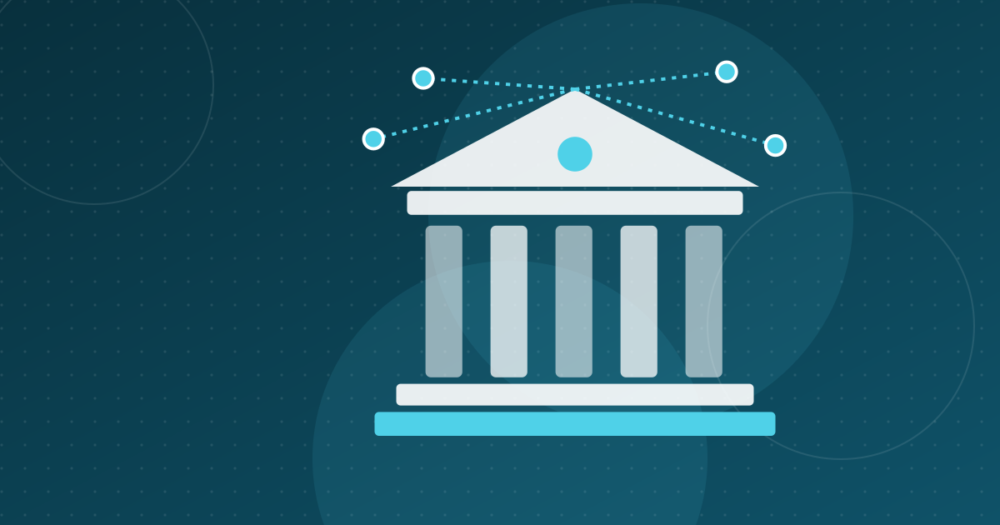

L'Arab Tunisian Bank bascule sur le core banking Temenos
En 2022, l'Arab Tunisian Bank a migré son core banking vers Temenos, la banque digitale et les paiements étant prévus ensuite. Ce qui a changé et pourquoi.

À retenir
- Temenos a annoncé le 21 juin 2022 la mise en production de sa plateforme de core banking à l'ATB, pour la banque de détail et la banque d'entreprise.
- La première phase couvrait comptes, crédits, dépôts et lutte contre la criminalité financière, avec l'intégrateur ITSS ; le projet avait démarré en 2019.
- La seconde phase devait ajouter banque digitale, paiements et gestion des risques ; aucune information publique sur son achèvement n'a été trouvée.
- Un système central moderne permet aux banques de lancer plus vite des produits et de se connecter aux fintechs via des API.
En juin 2022, l'Arab Tunisian Bank (ATB) a achevé la première phase de la migration de son système d'information bancaire central vers Temenos, l'éditeur suisse de logiciels bancaires. Les comptes des particuliers et des entreprises ont basculé sur le nouveau système, la banque digitale et les paiements étant prévus pour une seconde phase. C'est l'un des exemples les plus nets d'une banque tunisienne qui remplace les vieux systèmes au cœur de son activité.
Le passage de l'ATB au core banking Temenos : ce qui a été annoncé
Temenos a annoncé la mise en production le 21 juin 2022. Selon son communiqué :
- Le projet couvre les systèmes centraux des activités de banque de détail et de banque d'entreprise de l'ATB.
- La première phase a porté sur les modules Temenos comptes, crédits, dépôts et lutte contre la criminalité financière.
- Les comptes des clients particuliers et entreprises ont été migrés vers la nouvelle plateforme.
- L'intégration a été réalisée par Information Technology Solutions and Services (ITSS).
FinTech Futures, qui a relayé l'information le 22 juin 2022, précise que le projet avait démarré en 2019, lorsque l'ATB a signé avec Temenos pour un large éventail de solutions, du front au back-office.
Temenos présente son système comme une « plateforme ouverte de banque composable », fondée sur des microservices et des API. Concrètement, la banque peut ajouter ou remplacer un module, comme le crédit ou les paiements, sans reconstruire tout le système. Ni Temenos ni l'ATB n'ont précisé publiquement si la plateforme est hébergée dans le cloud ou dans les centres de données de la banque.
Seconde phase : banque digitale, paiements et risques
Une seconde phase devait ajouter des modules et des services préconfigurés de Temenos pour :
- la banque digitale ;
- les paiements ;
- la gestion des risques de l'entreprise.
Selon FinTech Futures, les solutions Temenos devaient à terme soutenir l'ensemble des activités de la banque. Nous n'avons pas trouvé d'information publique indiquant si cette seconde phase a été achevée depuis 2022.
Qui est l'ATB ?
L'ATB est une banque universelle de taille moyenne qui sert des particuliers, des PME et des grandes entreprises. Au moment de l'annonce, elle comptait environ 1 300 salariés et 134 agences dans le pays. Elle appartient au groupe Arab Bank, que Temenos présente comme l'une des plus grandes institutions financières du Moyen-Orient. Selon Temenos, l'ATB a été fondée en 1982 et figure parmi les cinq premières banques tunisiennes.
Ce qu'ont dit les dirigeants
Le directeur général de l'ATB, Ahmed Rjiba, a qualifié cette mise en production d'« étape majeure » dans la feuille de route stratégique de la banque. Il a souligné qu'une plateforme bancaire moderne et agile était essentielle pour développer des produits et services distinctifs, et que Temenos donnait à la banque « l'agilité dont elle a besoin ».
William Moroney, directeur général de Temenos pour le Moyen-Orient et l'Afrique, a mis en avant l'étendue des fonctionnalités de banque composable dont l'ATB peut désormais disposer. Il a aussi rappelé que Temenos travaillait avec dix banques en Tunisie.
Pourquoi le core banking compte pour la fintech tunisienne
Le core banking est le système qui tient les comptes des clients, enregistre chaque opération et calcule les intérêts. Beaucoup de banques fonctionnent encore avec des systèmes vieux de plusieurs décennies, qui rendent lents et coûteux le lancement d'un produit ou la connexion avec un partenaire extérieur.
Un système central moderne compte pour tout l'écosystème, de trois façons :
- Des produits plus rapides. Les banques peuvent lancer plus vite comptes en ligne, crédits instantanés et nouveaux services de paiement. Voir la transformation digitale des banques tunisiennes.
- Des API pour les partenaires. Un système conçu autour d'API facilite techniquement la connexion avec les fintechs, condition préalable à l'open banking.
- De meilleures données. Des données propres et centralisées sont la base du scoring de crédit, de la détection de fraude et des autres usages de l'IA dans la banque.
Un mouvement plus large
La migration de l'ATB est intervenue alors que la Tunisie construisait aussi son cadre fintech : la Banque centrale de Tunisie a lancé son bac à sable réglementaire en 2020. À mesure que les banques modernisent leurs systèmes centraux, l'écart technique entre banques établies et startups fintech se réduit. Les banques ont alors plus de moyens pour rivaliser avec les fintechs, mais aussi pour s'associer avec elles.
À noter : cette mise en production date de 2022. La technologie bancaire tunisienne a continué d'évoluer depuis, et le dispositif actuel de l'ATB peut différer de ce qui avait été annoncé à l'époque.
Questions fréquentes
Quel core banking utilise l'Arab Tunisian Bank ?
L'ATB est passée en juin 2022 sur la plateforme de core banking de Temenos pour ses activités de détail et d'entreprise, au terme d'un projet lancé en 2019. La première phase couvrait les comptes, les crédits, les dépôts et la lutte contre la criminalité financière.
Qui a réalisé la migration de l'ATB vers Temenos ?
La première phase a été menée par Information Technology Solutions and Services (ITSS), intégrateur partenaire de Temenos, selon Temenos et FinTech Futures.
Pourquoi la modernisation du core banking compte-t-elle pour les fintechs ?
Un système central moderne, fondé sur des API, permet aux banques de lancer plus vite des produits numériques et facilite techniquement la connexion avec des partenaires extérieurs. C'est une condition préalable à l'open banking et aux partenariats entre banques et fintechs.
Sources
Cet article est fourni à titre d'information et ne constitue pas un conseil juridique, financier ou en investissement. Les chiffres sont datés et sourcés ; vérifiez les dernières publications officielles avant toute décision.